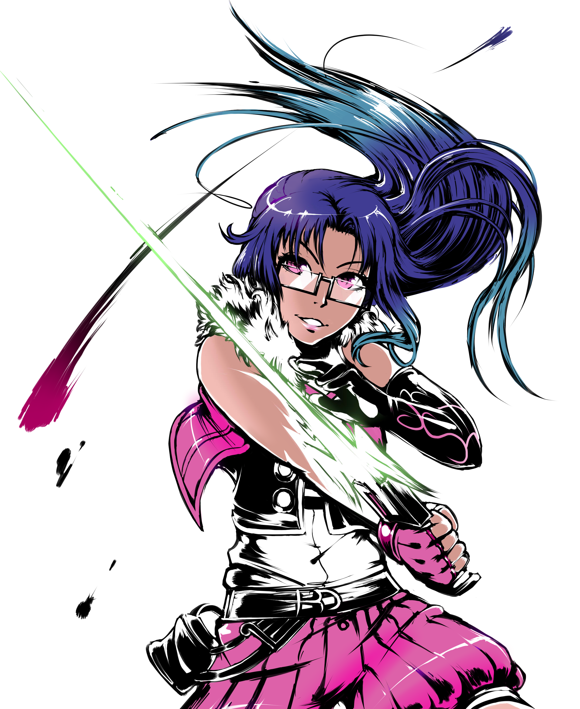
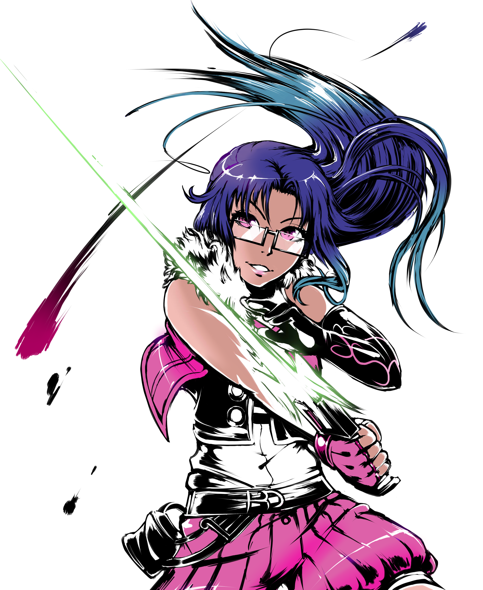

Alulu Dike

name: Alulu Dike
age: 21
hair color: Dark blue to cyan gradient and teal streaked highlights
hair style: Shoulder length flowing slightly curled into small ringlets
skin tone: Brown
eye color: Light violet with white irises and glowing slightly (glasses)
height: 5 feet 6.54 inches
ethnicity/race: Black
key attribute: intense
Ambidextrous
body type: muscled average
Character Bio/Personality:
Alulu Dike is a nightmare to face in combat.
Her weapon of choice is the Light Blade Revolver, a magically transforming weapon that is capable of assuming the form of a sword,
dual handguns, a scythe, a sniper rifle and a snake blade. Her most common fighting style uses the LBR as a set of a handgun and sword.
The Light Blade Revolver has two modes: the crystal blue mode is ethereal and does no physical damage to the enemy,
while the ruby mode is an actual weapon and can kill.